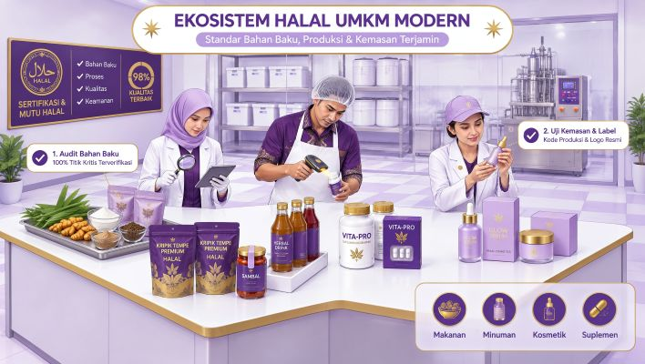
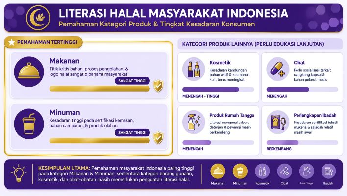
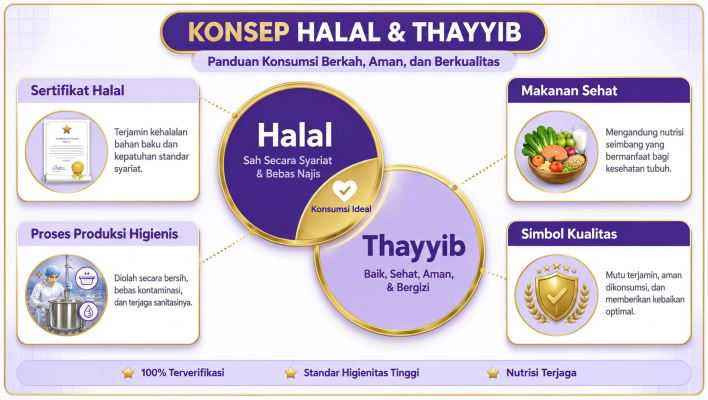
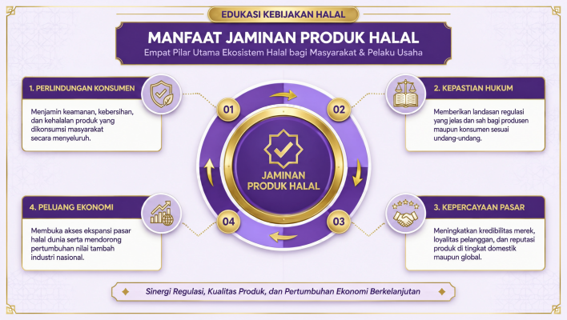
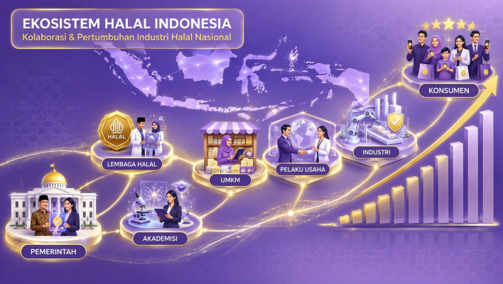
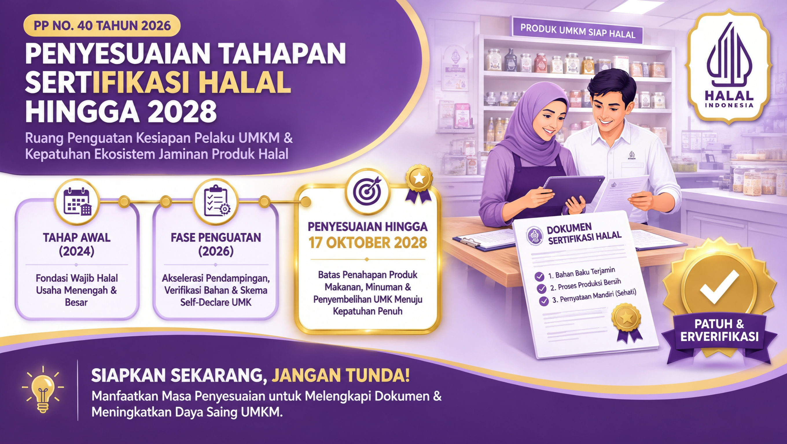

WEBINAR HALAL
Wajib Halal Diundur ke 2028?
Memahami Esensi Sertifikasi Halal di Indonesia
Tanggal Kegiatan: 24 Oktober 2026
Narasumber Utama: H. M. Fuad Nasar, S.Sos., M.Sc.
Penyelenggara: HalalTalk Series - Yayasan Edukasi Halal Indonesia (YEHI)
Ketika "Wajib Halal Diundur" Menjadi Perbincangan
Beberapa waktu terakhir, pelaku usaha dan masyarakat dihadapkan pada informasi mengenai penyesuaian tahapan kewajiban sertifikasi halal hingga tahun 2028. Tidak sedikit yang kemudian bertanya, apakah kewajiban sertifikasi halal sudah tidak berlaku lagi? Apakah pelaku usaha sudah tidak perlu mempersiapkan sertifikasi halal untuk produknya?
Pertanyaan-pertanyaan tersebut menjadi salah satu topik utama dalam webinar HalalTalk bertajuk
Sertifikasi Halal: Wajib, Sunnah atau Mubah?
Dalam pemaparannya, para narasumber menegaskan bahwa penyesuaian tahapan bukan berarti penghapusan kewajiban. Untuk memahami hal tersebut, masyarakat perlu melihat persoalan halal secara lebih luas, tidak hanya dari sisi regulasi, tetapi juga dari sisi agama, perlindungan konsumen, dan pembangunan ekonomi nasional.
Halal Bukan Sekadar Label pada Kemasan

Bagi umat Islam, mengonsumsi produk halal bukan sekadar pilihan, melainkan bagian dari tuntunan agama. Namun dalam perkembangan zaman, konsep halal tidak lagi hanya berkaitan dengan makanan dan minuman yang dikonsumsi sehari-hari.
Saat ini isu halal telah berkembang menjadi bagian dari sistem ekonomi modern. Produk halal hadir dalam berbagai sektor, mulai dari makanan, minuman, kosmetik, obat-obatan, suplemen kesehatan, bahan baku industri, hingga berbagai produk konsumsi lainnya.
Perkembangan tersebut membuat kebutuhan akan kepastian status halal menjadi semakin penting. Konsumen tidak mungkin memeriksa sendiri seluruh rantai produksi suatu produk. Karena itulah sertifikasi halal hadir sebagai mekanisme yang memberikan kepastian dan perlindungan bagi masyarakat.
Literasi Halal Masih Menjadi Tantangan

Paparan narasumber juga menunjukkan bahwa tingkat literasi halal masyarakat masih belum merata. Sebagian besar masyarakat memahami kewajiban halal pada makanan dan minuman. Namun pemahaman terhadap kategori produk lainnya masih relatif lebih rendah.
Kosmetik, obat-obatan, suplemen kesehatan, produk kimia, perlengkapan rumah tangga, bahkan perlengkapan ibadah masih sering luput dari perhatian ketika membahas halal.
Kondisi ini menunjukkan bahwa tantangan terbesar saat ini bukan hanya memperbanyak sertifikat halal, tetapi juga meningkatkan pemahaman masyarakat mengenai ruang lingkup halal secara menyeluruh.
Semakin baik literasi halal masyarakat, semakin besar pula kesadaran untuk memilih produk yang memiliki kejelasan status halal.
Memahami Perbedaan Halal dan Thayyib

Salah satu materi yang menarik dalam webinar adalah penjelasan mengenai konsep halal dan thayyib.
Banyak orang menganggap kedua istilah tersebut memiliki makna yang sama, padahal keduanya memiliki penekanan yang berbeda.
Halal berkaitan dengan aspek hukum syariah, suatu produk dikatakan halal apabila bahan, proses, dan penggunaannya sesuai dengan ketentuan agama.
Sementara itu, Thayyib berkaitan dengan kualitas dan kebaikan produk.
Konsep ini menyentuh aspek kesehatan, keamanan pangan, kebersihan, kualitas bahan baku, serta manfaat produk bagi manusia.
Sebuah produk dapat halal tetapi tidak thayyib. Sebagai contoh, makanan yang halal namun sudah rusak atau kadaluarsa tetap tidak layak dikonsumsi.
Sebaliknya, sebuah produk dapat diproses secara higienis dan memenuhi standar kualitas tinggi, tetapi tetap tidak halal apabila berasal dari bahan yang dilarang.
Oleh karena itu, tujuan ideal dalam sistem produk halal bukan hanya mencapai status halal, tetapi juga memastikan bahwa produk tersebut baik, aman, dan bermanfaat.
Mengapa Sertifikasi Halal Dibutuhkan?

Lahirnya sistem Jaminan Produk Halal tidak semata-mata bertujuan menambah persyaratan bagi pelaku usaha. Narasumber menjelaskan bahwa terdapat empat manfaat utama dari penyelenggaraan Jaminan Produk Halal.
Pertama, memberikan perlindungan kepada konsumen agar memperoleh kepastian mengenai produk yang dikonsumsi dan digunakan.
Kedua, menciptakan kepastian hukum bagi masyarakat maupun pelaku usaha.
Ketiga, meningkatkan kepercayaan pasar karena konsumen memiliki keyakinan yang lebih tinggi terhadap produk yang telah tersertifikasi.
Keempat, membuka peluang ekonomi yang lebih luas melalui peningkatan daya saing produk di pasar domestik maupun internasional.
Dengan demikian, sertifikasi halal tidak hanya memberikan manfaat bagi konsumen Muslim, tetapi juga menjadi instrumen strategis yang mendukung perkembangan usaha.
Membangun Ekosistem Halal di Indonesia

Indonesia merupakan negara dengan populasi Muslim terbesar di dunia. Potensi ini menjadi modal besar dalam pengembangan industri halal nasional.
Karena itu, pembangunan halal tidak cukup hanya dengan menerbitkan sertifikat halal. Yang dibutuhkan adalah pembangunan ekosistem halal secara menyeluruh.
Dalam webinar dijelaskan bahwa pengembangan ekosistem halal melibatkan berbagai pihak, mulai dari kementerian dan lembaga pemerintah, pemerintah daerah, akademisi, pelaku usaha, lembaga pendamping, hingga mitra strategis dari dalam maupun luar negeri.
Kolaborasi ini diperlukan agar industri halal Indonesia mampu berkembang dari hulu hingga hilir dan memiliki daya saing yang kuat di tingkat global.
Apa Arti Penyesuaian Hingga Tahun 2028?

Pada bagian akhir, narasumber menjelaskan bahwa Indonesia menerapkan sistem sertifikasi halal yang bersifat wajib dengan tahapan yang diatur dalam peraturan perundang-undangan.
Penyesuaian tahapan hingga tahun 2028 perlu dipahami sebagai bentuk penguatan implementasi, bukan sebagai penghapusan kewajiban halal.
Pemerintah memberikan ruang yang lebih luas bagi sebagian pelaku usaha agar dapat mempersiapkan diri secara lebih optimal. Namun prinsip dasarnya tetap sama, yaitu memberikan jaminan dan kepastian mengenai kehalalan produk yang beredar di masyarakat.
Karena itu, masa penyesuaian ini seharusnya tidak dimanfaatkan untuk menunda persiapan. Justru inilah waktu yang tepat bagi pelaku usaha untuk mulai memahami regulasi halal, memperbaiki sistem produksi, menyiapkan dokumen yang diperlukan, dan membangun budaya kepatuhan terhadap standar halal.
Kesimpulan
Webinar ini memberikan pemahaman bahwa persoalan halal jauh lebih luas daripada sekadar tenggat waktu sertifikasi. Halal berkaitan dengan perlindungan konsumen, kepastian hukum, literasi masyarakat, pengembangan ekonomi, dan pembangunan ekosistem industri halal nasional.
Penyesuaian tahapan hingga tahun 2028 tidak mengubah kewajiban dasar untuk menghadirkan produk halal yang dapat dipercaya masyarakat. Sebaliknya, masa transisi ini perlu dimanfaatkan sebagai kesempatan untuk memperkuat kesiapan usaha dan meningkatkan kualitas produk agar mampu bersaing di tengah pertumbuhan industri halal yang semakin pesat.
Sumber Materi
- HalalTalk Series - 24 Oktober 2026
- H. M. Fuad Nasar, S.Sos., M.Sc.
- Dr. Beny Cahyadie, S.STP., M.Si.